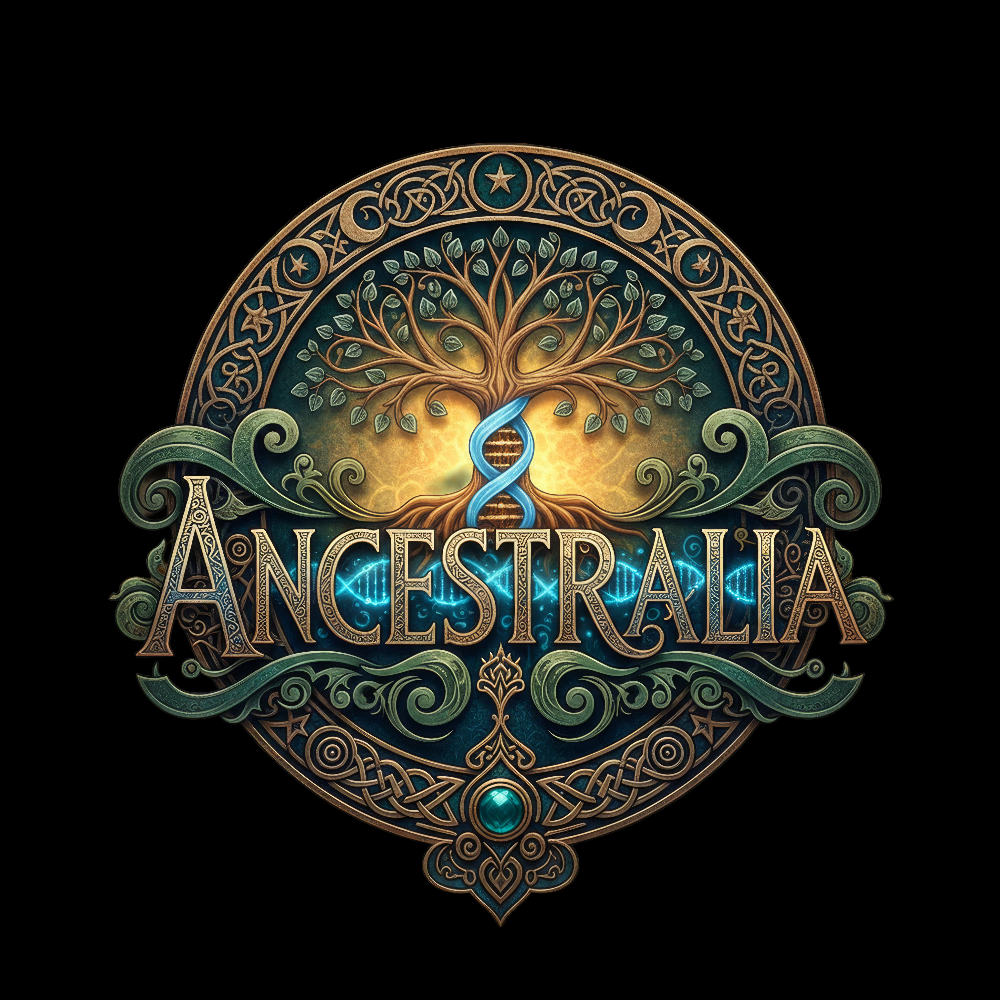

AncestraliaJavier Rubio
AncestraliaJavier Rubio
AncestraliaJavier Rubio
AncestraliaJavier Rubio

Ninguno de nosotros es un punto de partida aislado. Somos el resultado de innumerables historias, generaciones, desplazamientos y encuentros. Esto no es la página de un disco: es un lugar al que se entra.
Desciende por las raíces
Doce composiciones crecen desde un mismo tronco. Cada nodo es una canción; cada raíz, una conexión con las demás. Toca un nodo para entrar en su mundo y ver su vídeo oficial.
Exploración libre o viaje lineal: el círculo se cierra donde empieza, en Nova Ancestralia.
Cada tema guarda su propio paisaje, su luz y su memoria. Desde aquí puedes leerlo, situarlo en el mapa y seguir sus conexiones con el resto del álbum.
No es un mapa turístico ni una lección de historia: es la geografía emocional del álbum, dibujada como el mapa antiguo que vive detrás del emblema de la portada —pergamino, rosa de los vientos y los doce títulos escritos sobre las costas—. Elige un territorio, o toca un título sobre el mapa, y descubre qué canciones nacen de él.
Ancestralia es un proyecto musical y audiovisual de carácter conceptual y transmedia, desarrollado durante aproximadamente dos años. Su materia prima no es solo el sonido: es la pregunta de de dónde venimos y de todo lo que tuvo que ocurrir —viajes, encuentros, pérdidas, mezclas— para que existiéramos nosotros.
El álbum parte de una idea sencilla y vertiginosa: nadie empieza de cero. Detrás de cada persona hay generaciones que se marcharon, que llegaron, que se encontraron con otras culturas y las hicieron suyas. Esa memoria heredada —familiar, cultural y genética— es la que recorren las doce composiciones, como doce estaciones de un mismo viaje.
Por eso la estructura es circular: el recorrido nace en Ancestralia, desciende a las raíces, atraviesa las migraciones y los encuentros, y desemboca en Nova Ancestralia, donde el pasado no desaparece, sino que se transforma y sigue proyectándose hacia el futuro.
El punto de partida: la intuición de que existe un lugar —interior y colectivo— del que procede todo lo demás.
La memoria familiar, cultural y genética: lo que se hereda sin haberlo vivido y, sin embargo, nos constituye.
Los desplazamientos, las maletas, los mares cruzados: cada partida transforma a quien se va y a quien se queda.
Las culturas se tocan, las lenguas se mezclan, las músicas se reconocen. De ese roce nace lo nuevo.
La transformación y la continuidad: las raíces se convierten en ramas que se proyectan hacia el horizonte.
«Un viaje hacia nuestras raíces para descubrir todo lo que todavía está por venir.»
Ancestralia se construyó en el estudio de Javier Rubio combinando composición, instrumentos del mundo, estaciones de trabajo de audio digital (DAW) e inteligencia artificial. La IA actúa aquí como una herramienta más dentro del proceso artístico —un instrumento nuevo en la mesa—, nunca como sustituta de la dirección creativa.


Melodías y atmósferas que buscan la esencia de cada región a través de sus propios instrumentos: la guitarra, las flautas, las percusiones del mundo o el acordeón llevan la voz principal, a veces fusionando unas culturas con otras. Junto a ellos conviven el handpan, los sintetizadores y las guitarras eléctricas, que aportan el aire contemporáneo del viaje.
Generación y exploración de texturas, voces y universos visuales con inteligencia artificial, seleccionados y dirigidos criterio a criterio por el autor.
Grabación, edición, mezcla y máster en la estación de trabajo digital: el punto donde lo orgánico y lo tecnológico terminan de fundirse.
Cada canción desarrolla su propia identidad visual —como la ilustración de «Aljamía»— para que el álbum pueda también contemplarse, no solo escucharse.

El recorrido termina donde vuelve a empezar. Las raíces, transformadas, se proyectan hacia el horizonte: el pasado no desaparece, continúa en quien lo escucha ahora.
Todos somos consecuencia de historias anteriores. Algo permanece, y continúa transmitiéndose.
Sigue el viaje y el proceso de Javier Rubio en Instagram: @javierrubio_inedit
Este visor no ha podido cargar el vídeo de YouTube dentro de la página.